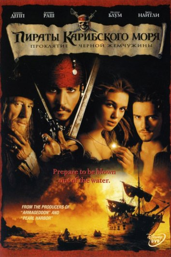

My favourite actor
John Christopher "Johnny" Depp
Movies in which he played
-
Pirates of the Caribbean: The Curse of the Black Pearl
-
Pirates of the Caribbean: Dead Man's Chest
-
Pirates of the Caribbean: At World's End
-
Pirates
of the Caribbean: The Curse of the Black Pearl

Пиратское судно «Черная жемчужина» совершает дерзкое нападение на Порт-Ройал, похищая,
среди прочего, дочь
губернатора. В погоню за морскими авантюристами отправляется Уилл Тернер, друг детства девушки, вынужденный
заключить временный союз с бывшим капитаном Жемчужины - пиратом Джеком Воробьем. Захватив самый быстрый корабль
Британии, они начинают опасное путешествие, не подозревая, какие невероятные приключения ждут их впереди. В то
же
время жених похищенной Элизабет, бравый коммодор Норрингтон, спешит спасти свою возлюбленную, а также поймать
двух
беглых преступников, ответственных за захват быстроходного «Перехватчика», гордости Королевского военно-морского
флота.
-
Pirates of the
Caribbean: Dead Man's Chest
Джек Воробей оказывается в потустороннем мире, где он узнает, что должник Дэйви
Джонса – капитана легендарного
«Летучего Голландца», и после своей смерти он будет обязан служить вечно в его команде. Пирату не по себе от
такой
мысли, и ему нужно как можно быстрее решить эту проблему. Чтобы избавиться от проклятия Джек отправляется в
очередное плавание, на поиски сердца Джонса, спрятанного в сундуке на одном из островов. В этом деле ему
помогают
старые друзья – Уилл и Элизабет, которая все больше и больше проникается духом пиратства...
-
Pirates of the
Caribbean: At World's End
Лорд Беккет с помощью Дэйви Джонса, капитана «Летучего голландца», безжалостно
уничтожает пиратов. Джонс вынужден
ему помогать, ведь его сердце находится в руках у Беккета.
Тем временем Джек Воробей находится в ловушке на краю света. Уилл и Элизабет объединяются с самым заклятым
врагом
Джека – капитаном Барбоссой в одну команду. Вместе они отправляются в долгое и опасное путешествие на край
света,
чтобы освободить Джека, а потом найти способ остановить лорда Беккета и Дэйви Джонса.